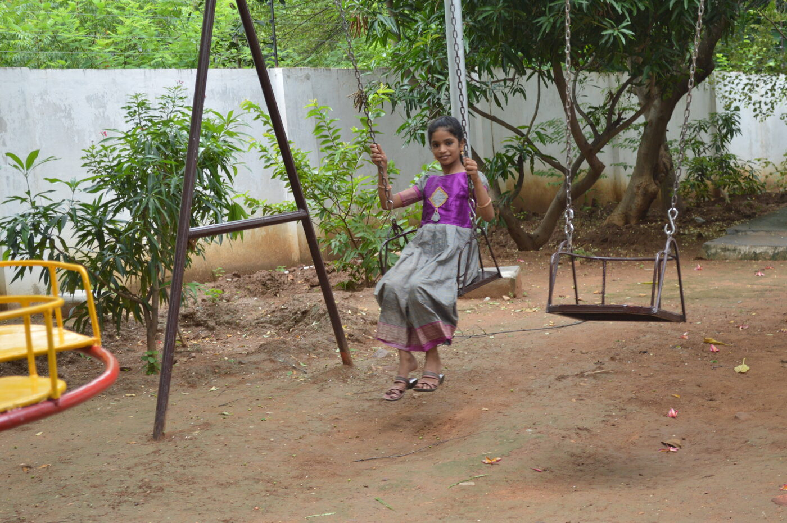
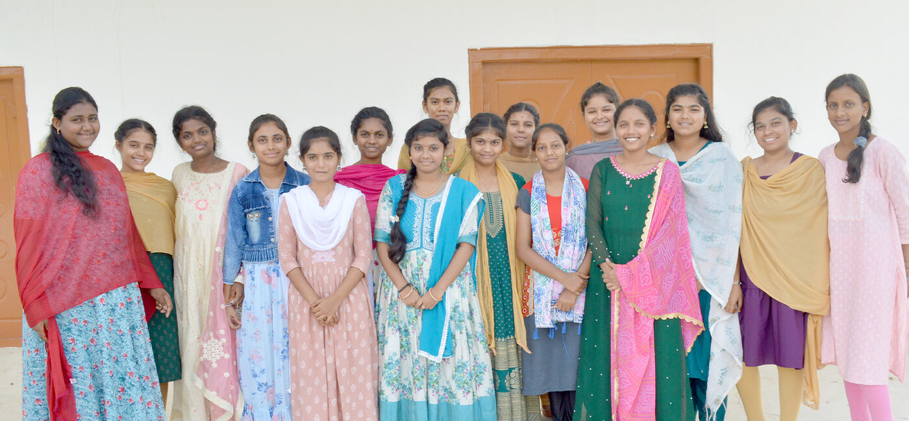
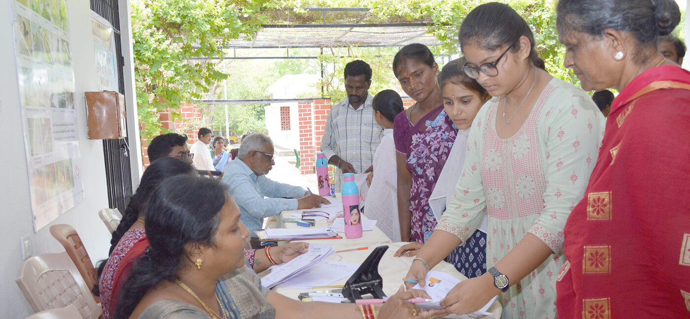
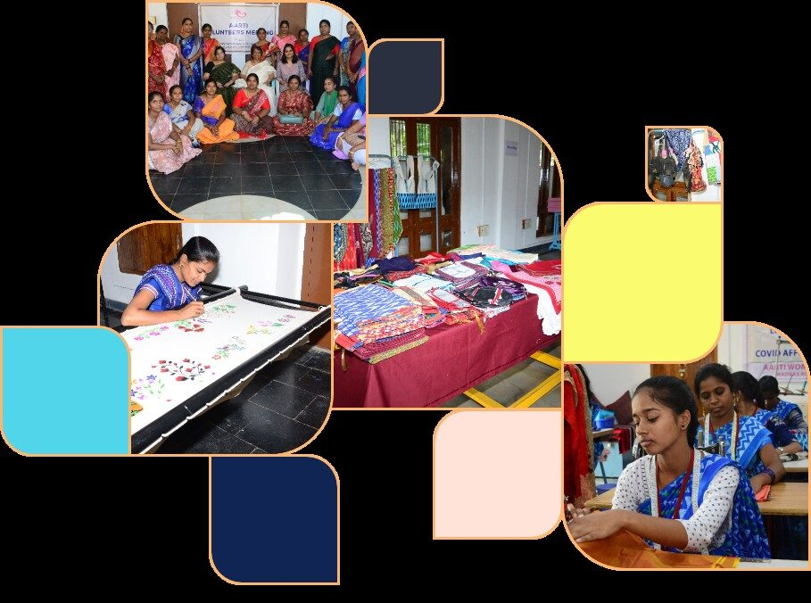
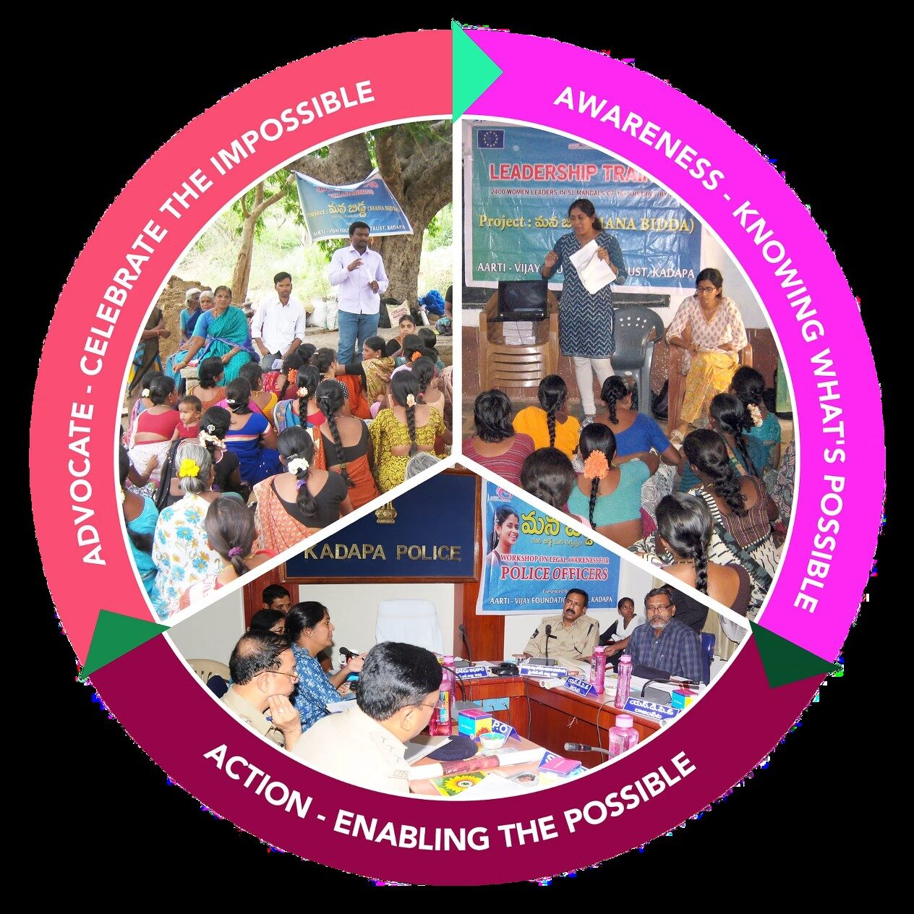

Impact
Our impact goes beyond numbers — it transforms lives and inspires hope.

Aarti Home: a safe haven for girls in need
Aarti Home is a sanctuary for orphaned, abused, or abandoned girls. We identify at-risk children, assess their home background, and promote parental involvement through counselling where possible. These children receive a formal education and basic necessities, and their well-being and progress are monitored monthly by teachers. Under the loving care of our staff, the girls practice yoga, play, study, dance, sing, and form strong bonds — receiving personalised emotional support until they are independent and settled.
Learn MoreMotivating children to study
Aarti School was founded in 2007 to educate children from all backgrounds to succeed academically and socially. Our emphasis is on equality, kindness, and compassion. We have a completion rate of 100% for Grade 10, with an average GPA of 8.8.
Bridge Program
Extra assistance is provided for students with little or no exposure to English and STEM subjects. Students are encouraged to participate in district-level events, contests, and open forums.
“In its purest form, education aids in a person’s development as a mature, independent being who can greatly blossom in goodness and love.”— Jiddu Krishnamurti


Strong, confident, independent women
At Aarti for Girls there are various options for women's empowerment. Regular workshops and training are conducted periodically across different disciplines. Nilofer, once dependent on her husband to manage the household expenses, transformed her life by becoming financially independent, educated, and confident.
Learn MoreHelping 70,319 women become purposeful leaders through leadership development, training in self-reliance, employment, and livelihood skills.
Ending gender discrimination through advocacy
We conduct village meetings, school-based programs, and leadership training to educate communities about health and legal rights, and to campaign against eve-teasing, child marriage, domestic violence, dowry, and female foeticide. Our seven open resource centres offer social, legal, and emotional support to women. We collaborate with government representatives, village chiefs, law enforcement, religious leaders, volunteers, and male feminists.
Projects Financed by the EU
Mana Bidda — our first EU-funded initiative aimed to stop discrimination against female children, end foeticide, and safeguard female human rights defenders. Abhaya — our second EU-funded initiative aimed to uplift women’s confidence and protect female human rights defenders.
Learn More